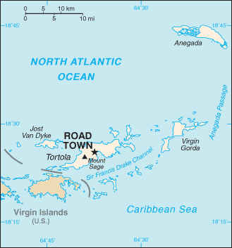
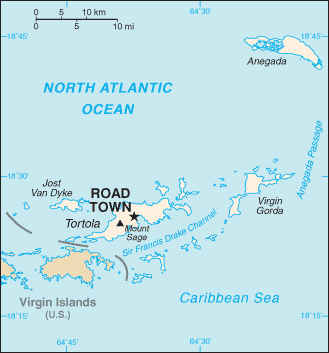

Central America and Caribbean :: BRITISH VIRGIN ISLANDS
Introduction :: BRITISH VIRGIN ISLANDS
-
First inhabited by Arawak and later by Carib Indians, the Virgin Islands were settled by the Dutch in 1648 and then annexed by the English in 1672. The islands were part of the British colony of the Leeward Islands from 1872-1960; they were granted autonomy in 1967. The economy is closely tied to the larger and more populous US Virgin Islands to the west; the US dollar is the legal currency. On 6 September 2017, Hurricane Irma devastated the island of Tortola. An estimated 80% of residential and business structures were destroyed or damaged, communications disrupted, and local roads rendered impassable.
Geography :: BRITISH VIRGIN ISLANDS
-
Caribbean, between the Caribbean Sea and the North Atlantic Ocean, east of Puerto Rico18 30 N, 64 30 WCentral America and the Caribbeantotal: 151 sq kmland: 151 sq kmwater: 0 sq kmnote: comprised of 16 inhabited and more than 20 uninhabited islands; includes the islands of Tortola, Anegada, Virgin Gorda, Jost van Dykecountry comparison to the world: 220about 0.9 times the size of Washington, DC0 km80 kmterritorial sea: 3 nmexclusive fishing zone: 200 nmsubtropical; humid; temperatures moderated by trade windscoral islands relatively flat; volcanic islands steep, hillymean elevation: NAelevation extremes: lowest point: Caribbean Sea 0 mhighest point: Mount Sage 521 mNEGL; pleasant climate, beaches foster tourismagricultural land: 46.7%arable land 6.7%; permanent crops 6.7%; permanent pasture 33.3%forest: 24.3%other: 29% (2011 est.)NAa fairly even distribution throughout the inhabited islands, with the largest islands of Tortola, Anegada, Virgin Gorda, and Jost Van Dyke having the largest populationshurricanes and tropical storms (July to October)limited natural freshwater resources except for a few seasonal streams and springs on Tortola; most of the islands' water supply comes from desalination plantsstrong ties to nearby US Virgin Islands and Puerto Rico
People and Society :: BRITISH VIRGIN ISLANDS
-
35,015 (July 2017 est.)country comparison to the world: 214noun: British Virgin Islander(s)adjective: British Virgin IslanderAfrican/black 76.3%, Latino 5.5%, white 5.4%, mixed 5.3%, Indian 2.1%, East Indian 1.6%, other 3%, unspecified 0.8% (2010 est.)English (official)Protestant 70.2% (Methodist 17.6%, Church of God 10.4%, Anglican 9.5%, Seventh Day Adventist 9.0%, Pentecostal 8.2%, Baptist 7.4%, New Testament Church of God 6.9%, other Protestant 1.2%), Roman Catholic 8.9%, Jehovah's Witness 2.5%, Hindu 1.9%, other 6.2%, none 7.9%, unspecified 2.4% (2010 est.)0-14 years: 16.7% (male 2,877/female 2,971)15-24 years: 13.37% (male 2,243/female 2,437)25-54 years: 49.37% (male 8,116/female 9,170)55-64 years: 11.6% (male 1,975/female 2,086)65 years and over: 8.97% (male 1,522/female 1,618) (2017 est.)total: 36.5 yearsmale: 36.3 yearsfemale: 36.6 years (2017 est.)country comparison to the world: 722.25% (2017 est.)country comparison to the world: 3611.1 births/1,000 population (2017 est.)country comparison to the world: 1775.1 deaths/1,000 population (2017 est.)country comparison to the world: 19016.5 migrant(s)/1,000 population (2017 est.)country comparison to the world: 2a fairly even distribution throughout the inhabited islands, with the largest islands of Tortola, Anegada, Virgin Gorda, and Jost Van Dyke having the largest populationsurban population: 46.8% of total population (2017)rate of urbanization: 1.63% annual rate of change (2015-20 est.)ROAD TOWN (capital) 13,000 (2014)at birth: 1.05 male(s)/female0-14 years: 0.97 male(s)/female15-24 years: 0.92 male(s)/female25-54 years: 0.89 male(s)/female55-64 years: 0.95 male(s)/female65 years and over: 0.95 male(s)/femaletotal population: 0.92 male(s)/female (2016 est.)total: 12.1 deaths/1,000 live birthsmale: 13.8 deaths/1,000 live birthsfemale: 10.4 deaths/1,000 live births (2017 est.)country comparison to the world: 120total population: 78.8 yearsmale: 77.4 yearsfemale: 80.3 years (2017 est.)country comparison to the world: 531.29 children born/woman (2017 est.)country comparison to the world: 218improved:urban: 98% of populationrural: 98% of populationtotal: 98% of populationunimproved:urban: 2% of populationrural: 2% of populationtotal: 2% of population (2010 est.)improved:urban: 97.5% of populationrural: 97.5% of populationtotal: 97.5% of populationunimproved:urban: 2.5% of populationrural: 2.5% of populationtotal: 2.5% of population (2015 est.)NANANA4.4% of GDP (2010)country comparison to the world: 96total: 14 yearsmale: NAfemale: NA (2015)
Government :: BRITISH VIRGIN ISLANDS
-
conventional long form: noneconventional short form: British Virgin Islandsabbreviation: BVIetymology: the myriad islets, cays, and rocks surrounding the major islands reminded explorer Christopher COLUMBUS in 1493 of Saint Ursula and her 11,000 virgin followers (Santa Ursula y las Once Mil Virgenes), which over time shortened to the Virgins (las Virgenes)overseas territory of the UK; internal self-governingparliamentary democracy (House of Assembly); self-governing overseas territory of the UKname: Road Towngeographic coordinates: 18 25 N, 64 37 Wtime difference: UTC-4 (1 hour ahead of Washington, DC, during Standard Time)none (overseas territory of the UK)none (overseas territory of the UK)Territory Day, 1 July (1956)several previous; latest effective 15 June 2007 (2016)English common lawsee United Kingdom18 years of age; universalchief of state: Queen ELIZABETH II (since 6 February 1952); represented by Governor Gus JASPERT (since 22 August 2017)head of government: Premier Orlando SMITH (since 9 November 2011)cabinet: Executive Council appointed by the governor from members of the House of Assemblyelections/appointments: the monarchy is hereditary; governor appointed by the monarch; following legislative elections, the leader of the majority party or majority coalition usually appointed premier by the governordescription: unicameral House of Assembly (13 seats; 9 members directly elected in single-seat constituencies and 4 at-large seats by simple majority vote to serve 4-year terms); note - the Assembly includes the attorney general, a non-voting ex officio memberelections: last held on 8 June 2015 (next to be held in 2019)election results: percent of vote by party - NDP 60.2%, VIP 30.2%, other 9.6%; seats by party - NDP 11, VIP 2highest court(s): the Eastern Caribbean Supreme Court (ECSC) is the superior court of the Organization of Eastern Caribbean States; the ECSC - headquartered on St. Lucia - consists of the Court of Appeal - headed by the chief justice and 4 judges - and the High Court with 18 judges; the Court of Appeal is itinerant, travelling to member states on a schedule to hear appeals from the High Court and subordinate courts; High Court judges reside at the member states with 3 on the British Virgin Islandsjudge selection and term of office: Eastern Caribbean Supreme Court chief justice appointed by Her Majesty, Queen ELIZABETH II; other justices and judges appointed by the Judicial and Legal Services Commission; Court of Appeal justices appointed for life with mandatory retirement at age 65; High Court judges appointed for life with mandatory retirement at age 62subordinate courts: Magistrates' CourtsNational Democratic Party or NDP [Orlando SMITH]Virgin Islands Party or VIP [Julian FRASER]Family Support Network or FSNOffice of Gender Affairs or ODA (formerly Woman's Desk)other: environmentalistsCaricom (associate), CDB, Interpol (subbureau), IOC, OECS, UNESCO (associate), UPUnone (overseas territory of the UK)none (overseas territory of the UK)blue with the flag of the UK in the upper hoist-side quadrant and the Virgin Islander coat of arms centered in the outer half of the flag; the coat of arms depicts a woman flanked on either side by a vertical column of six oil lamps above a scroll bearing the Latin word VIGILATE (Be Watchful); the islands were named by COLUMBUS in 1493 in honor of Saint Ursula and her 11 virgin followers (some sources say 11,000) who reputedly were martyred by the Huns in the 4th or 5th century; the figure on the banner holding a lamp represents the saint; the other lamps symbolize her followerszenaida dove, white cedar flower; national colors: yellow, green, red, white, bluenote: as a territory of the United Kingdom, "God Save the Queen" is official (see United Kingdom)
Economy :: BRITISH VIRGIN ISLANDS
-
The economy, one of the most stable and prosperous in the Caribbean, is highly dependent on tourism, which generates an estimated 45% of the national income. More than 934,000 tourists, mainly from the US, visited the islands in 2008. Because of traditionally close links with the US Virgin Islands, the British Virgin Islands has used the US dollar as its currency since 1959.Livestock raising is the most important agricultural activity; poor soils limit the islands' ability to meet domestic food requirements.In the mid-1980s, the government began offering offshore registration to companies wishing to incorporate in the islands, and incorporation fees now generate substantial revenues. Roughly 400,000 companies were on the offshore registry by yearend 2000. The adoption of a comprehensive insurance law in late 1994, which provides a blanket of confidentiality with regulated statutory gateways for investigation of criminal offenses, made the British Virgin Islands even more attractive to international business.$500 million (2010 est.)country comparison to the world: 213$1.095 billion (2008)1.3% (2010 est.)-0.6% (2008 est.)country comparison to the world: 165$42,300 (2010 est.)country comparison to the world: 40household consumption: 68.9%government consumption: 8.9%investment in fixed capital: 25%investment in inventories: 0%exports of goods and services: 91.8%imports of goods and services: -94.6% (2016 est.)agriculture: 1%industry: 11.2%services: 87.8% (2016 est.)fruits, vegetables; livestock, poultry; fishtourism, light industry, construction, rum, concrete block, offshore banking center2.2% (2016 est.)country comparison to the world: 10112,770 (2004)country comparison to the world: 216agriculture: 0.6%industry: 40%services: 59.4% (2005)8.7% (2010 est.)country comparison to the world: 110NA%lowest 10%: NA%highest 10%: NA%revenues: $300 millionexpenditures: $400 million (2016 est.)27.4% of GDP (2016 est.)country comparison to the world: 101-9.1% of GDP (2016 est.)country comparison to the world: 1941 April - 31 March1.1% (2016 est.)0.9% (2015 est.)country comparison to the world: 93$362.6 million (2011 est.)$279.8 million (2010 est.)country comparison to the world: 48$23 million (2015 est.)country comparison to the world: 210rum, fresh fish, fruits, animals; gravel, sand$210 million (2015 est.)country comparison to the world: 206building materials, automobiles, foodstuffs, machinery$36.1 million (1997)country comparison to the world: 198the US dollar is used
Energy :: BRITISH VIRGIN ISLANDS
-
126 million kWh (2015 est.)country comparison to the world: 197631.5 million kWh (2015 est.)country comparison to the world: 1650 kWh (2016 est.)country comparison to the world: 2130 kWh (2016 est.)country comparison to the world: 21648,000 kW (2015 est.)country comparison to the world: 193658.3% of total installed capacity (2015 est.)country comparison to the world: 10% of total installed capacity (2015 est.)country comparison to the world: 2050% of total installed capacity (2015 est.)country comparison to the world: 2110% of total installed capacity (2015 est.)country comparison to the world: 2120 bbl/day (2016 est.)country comparison to the world: 2090 bbl/day (2014 est.)country comparison to the world: 2080 bbl/day (2014 est.)country comparison to the world: 2070 bbl (1 January 2017 es)country comparison to the world: 2090 bbl/day (2014 est.)country comparison to the world: 2101,200 bbl/day (2015 est.)country comparison to the world: 2030 bbl/day (2014 est.)country comparison to the world: 2111,209 bbl/day (2014 est.)country comparison to the world: 1990 cu m (2013 est.)country comparison to the world: 2090 cu m (2013 est.)country comparison to the world: 1440 cu m (2013 est.)country comparison to the world: 2060 cu m (2013 est.)country comparison to the world: 2050 cu m (1 January 2014 es)country comparison to the world: 205200,000 Mt (2013 est.)country comparison to the world: 204
Communications :: BRITISH VIRGIN ISLANDS
-
total subscriptions: 12,000subscriptions per 100 inhabitants: 36 (July 2016 est.)country comparison to the world: 197total: 42,000subscriptions per 100 inhabitants: 126 (July 2016 est.)country comparison to the world: 202general assessment: good overall telephone servicedomestic: fixed-line connections exceed 35 per 100 persons and mobile cellular subscribership is roughly 125 per 100 personsinternational: country code - 1-284; connected via submarine cable to Bermuda; the East Caribbean Fiber System (ECFS) submarine cable provides connectivity to 13 other islands in the eastern Caribbean (2015)1 private TV station; multi-channel TV is available from cable and satellite subscription services; about a half-dozen private radio stations (2007).vgtotal: 14,600percent of population: 43.6% (July 2016 est.)country comparison to the world: 207
Transportation :: BRITISH VIRGIN ISLANDS
-
number of registered air carriers: 1inventory of registered aircraft operated by air carriers: 3 (2015)VP-L (2016)4 (2013)country comparison to the world: 185total: 2914 to 1,523 m: 1under 914 m: 1 (2017)total: 2914 to 1,523 m: 2 (2013)total: 200 kmpaved: 200 km (2007)country comparison to the world: 209major seaport(s): Road Harbor
Military and Security :: BRITISH VIRGIN ISLANDS
-
defense is the responsibility of the UK
Transnational Issues :: BRITISH VIRGIN ISLANDS
-
nonetransshipment point for South American narcotics destined for the US and Europe; large offshore financial center makes it vulnerable to money laundering